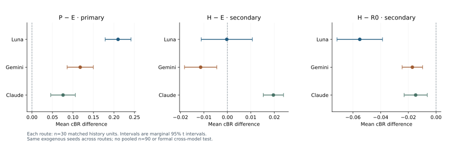

REM separates factual, behavioral and private records from a public source-reliability table. A synthetic team can receive different versions of the table while retaining the same recorded experience.
Each route contains 30 selected three-event histories, five Team conditions and two isolated conflict profiles. P replaces two complete cells of the evidence-derived E table. The outcome is conditional expected excess Brier loss. No profile feedback or table updating occurs.

The records demonstrate bounded content sensitivity. They do not establish a naturally harmful memory, a social mechanism, the original longitudinal hypotheses or human-organizational validity. Repeat differences and historical API trace limits remain disclosed.
python -m pip install -r requirements-lock.txt python tools/review_all_archives.py --output runs/complete-offline-review
Use a new output directory. The command tests the code, verifies and replays all three archives, checks replay outputs and independently reconstructs statistics. It makes no model calls. Strict results remain visible; optional tolerance is restricted to recomputed score fields.
Luna evidence · Claude evidence · Gemini evidence · Historical adapters and limits
The named development repository is distinct from an anonymous journal-review copy. Unpublished proposal drafts and private correspondence are not included here.